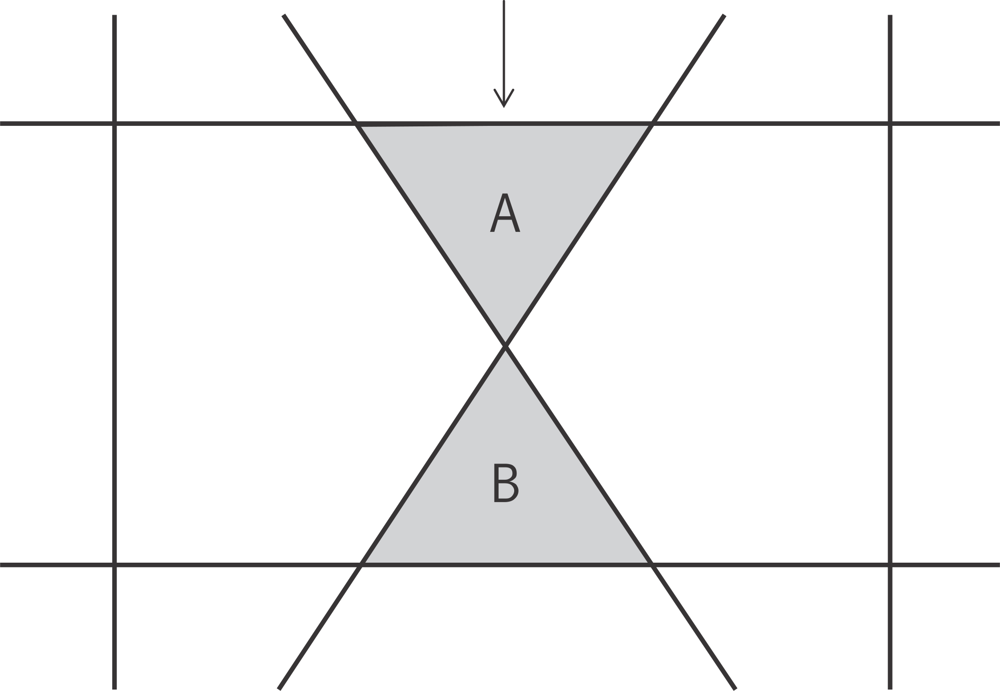

Modeling Chaotic Systems
In some calculations, especially in those involving discontinuous materials, the results can be extremely sensitive to very small changes in initial conditions or trivial changes in loading sequence. After a cursory review, this situation may seem unsatisfactory and may be taken as a reason to mistrust the computer simulations. However, the sensitivity exists in the physical system being modeled. There appear to be a least two sources for the seemingly erratic behavior:
There are certain geometric patterns of discontinuities that force the system to choose, apparently at random, between two alternative outcomes. The subsequent evolution depends on which choice is made. For example, Figure 1 illustrates a small portion of a jointed rock mass. If block A is forced to move down relative to B, it can either go to the left or to the right of B. The choice will depend on microscopic irregularities in geometry, properties, or kinetic energy.
Figure 1: A small portion of a jointed rock mass.
There are processes in the system that can be described as “softening” or, more generally, as cases of positive feedback. In a fairly uniform stress field, small perturbations are magnified in the subsequent evolution because a region that has more strain softens more and thereby attracts more strain, and so on, in a cycle of positive feedback.
{kind=link}
Both phenomena give rise to behavior that is chaotic in its extreme form ([Gleick1987], [Thompson1986]). The study of chaotic systems reveals that the detailed evolution of such a system is not predictable, even in principle. The observed sensitivity of the computer model to small changes in initial conditions or numerical factors is simply a reflection of a similar sensitivity in the real world to small irregularities. There is no point in pursuing ever more “accurate” calculations, because the resulting model would be unrepresentative of the real world, where conditions are not perfect. What should our modeling strategy be in the face of a chaotic system? It appears that the best we can expect from such a model is a finite spectrum of expected behavior; the statistics of a chaotic system are well-defined. We need to construct models that contain distributions of initial irregularities. maybe omit this, which used to be at the end of the preceding sentence (e.g., by using FLAC3D’s gauss_dev or uniform_dev parameter on the property command, or by specifying given distributions with a special FISH function). Each model should be run several times, with different distributions of irregularities. PFC has here: particle assemblies Under these conditions, we may expect the fluctuations in behavior to be triggered by the imposed irregularities rather than by artifacts of the numerical solution scheme. We can express the results in a statistical form.
| Was this helpful? ... | UDEC © 2018, Itasca | Updated: Mar 15, 2024 |